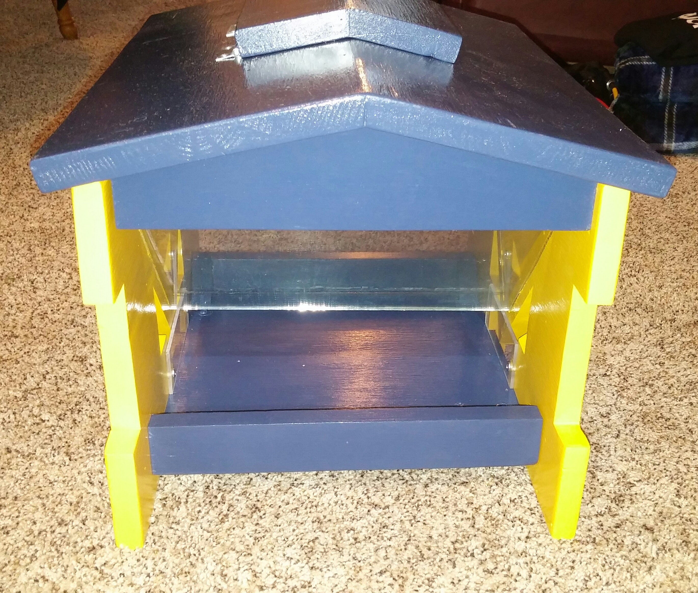

I wonder if the birds will like UM as much as my Father-in-Law
We recently purchased our first home. One of the first projects was to update the closet by the door.
We needed a place for coats and shoes, so I designed and built this shelving system.
Construction is primarily particle board, finished with Primer+Paint+Poly. The closet rod is an oak dowel.